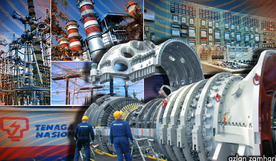

Manual DC 30V
Bab 1: Pengenalan
Bab pertama buku ini merupakan pengenalan secara am kepada sistem bekalan arus terus 30V yang ditempatkan di Pencawang Elektrik (PE) 11/0.4 kV dan Stesen Suis Utama (SSU) 11 kV. Segala aspek yang berkaitan dengan sistem bekalan arus terus 30V dinyatakan di sini untuk memperkenalkan pembaca dengan istilah-istilah utama dan mengaitkan konsep-konsep yang akan diliputi dengan lebih mendalam.
1.1 Bekalan Arus Terus
Bekalan arus terus adalah berbeza berbanding dengan bekalan arus ulang-alik dari segi penggunaanya dan pengoperasianya seperti:
- sebagai sistem bekalan bantuan (support system).
- penghantaran dari punca ke beban yang mudah dan pendek.
- kapasiti yang rendah
- pengaliran yang lebih terjamin
- kendalian dan senggaraan yang mudah
Kebiasaannya sistem bekalan arus terus digunakan di:
- lampu kecemasan
- lampu isyarat keretapi
- penggera kebakaran
- komunikasi
- UPS (Uninterruptable Power System)
- bantuan kepada sistem solar
Lazimnya, bekalan arus terus ini diperolehi melalui arus ulangalik yang diubah jadi arus terus ataupun melalui sel-sel bateri yang berada dalam keadaan standby di dalam panel bateri. Pada kadar purata, bateri yang digunakan di pencawang elektrik dapat bertahan selama minima 5 jam tanpa bekalan AC.
Bekalan arus terus memainkan peranan yang amat penting dalam sistem perlindungan pencawang elektrik.
Bekalan arus terus di dalam pencawang digunakan untuk mengaktifkan sistem perlindungan bagi tujuan menutup solenoid, pelantikan pemutus litar, penunjuk arah keluar/masuk dan isyarat kecemasan. Sila rujuk Rajah 1.1 untuk memahami sistem perlindungan di pencawang elektrik.
